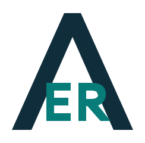

Automation & Integrations
Reduce repetitive work and connect the tools your business depends on. We help design workflows and API integrations that fit your operations.
Workflow orchestration · REST APIs · System integration
APEX ERCONSULTINGCLARITY. EXECUTION. PROGRESS.
Connect your systems. Simplify your operations. Put your technology plans into practice.
Let's explore your next step ↗IT consulting for growing businesses and SaaS teams.
Growing businesses / SaaS providers / IT & operations teams
01 / OUR EXPERTISE
Reduce repetitive work and connect the tools your business depends on. We help design workflows and API integrations that fit your operations.
Workflow orchestration · REST APIs · System integrationMake informed infrastructure decisions. Assess your cloud environment, plan infrastructure as code, and address reliability and scalability needs.
Cloud assessments · IaC planning · Platform reliabilityBridge the gap between purchasing a platform and getting value from it. We support implementation, onboarding, integrations and team enablement.
Implementation · Customer onboarding · EnablementTurn competing priorities into an actionable roadmap. Get technical guidance, project planning and professional services aligned with your business goals.
Technical assessments · Technology roadmaps · Ongoing guidance02 / HOW WE WORK
Every engagement starts with your context, your team and what success means for your business.
Explore your current environment, challenges and desired outcomes.
Agree on scope, priorities and practical success criteria.
Work with your team to configure, integrate and validate the solution.
Transfer knowledge and support adoption so your team can move forward.
03 / ABOUT APEX ER
Apex ER Consulting LLC is a US-registered IT consulting company serving businesses in the United States and Latin America, in English and Spanish.
Founded by Elio Espinel, Apex ER brings together hands-on technical guidance and professional services leadership. His prior roles include Principal Technical Account Manager and Manager of Professional Services at PagerDuty, supporting enterprise automation, integrations and platform adoption.
YOUR NEXT STEP
Tell us about the process, platform or technology challenge you want to improve.